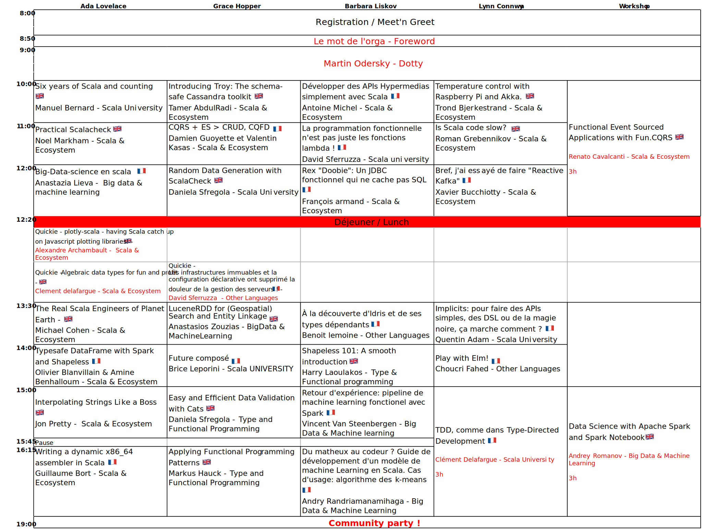
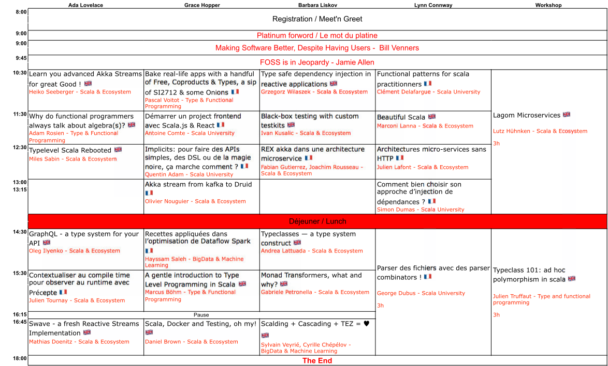

Scala.IO Schedule
The detailed schedule is not available just yet but here is the outline of the conference.
- Wednesday : Speaker's Diner, 07:00 PM (19:00) - ...
- Thursday : Opening 08:00 AM - Closing 06:00 PM (18:00)

- Friday : Opening 08:00 AM - Closing 05:35 PM (17:35)

Community party
The community party will be held on thursday night. More details once everything is settled.